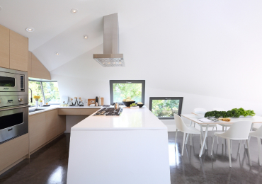
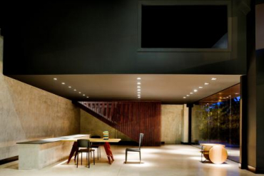
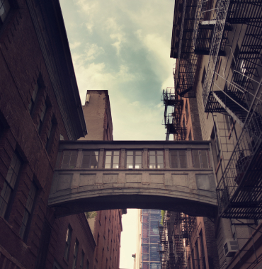

Architect


Vanglo House By LWPAC in Canada
Royal Blossom Hotel & Spa in USA
Sunrise Expanse Hotel in USA
Sunset Shack Hotel in Spain
Stargaze Resort & Spa in USA
Glorious Expanse Hotel in France


Amazing Gabion Ideas for Outdoors A Gabion is a cagebox or cylinder filled with rocks, concrete, orsometimes sand and soil and It is a great way todecorate your outdoor. Amazing Gabion Ideas forOutdoors A Gabion is a cage box or cylinder filledwith rocks, concrete, or sometimes sand and soil andIt is a great way to decorate your outdoor


Amazing Gabion Ideas for Outdoors A Gabion is a cage box or cylinder filled with rocks, concrete, or sometimes sand and soil and It is a great way to decorate your outdoor. Amazing Gabion Ideas for Outdoors A Gabion is a cage box or cylinder filled with rocks, concrete, or sometimes sand and soil and It is a great way to decorate your outdoor

Amazing Gabion Ideas for Outdoors A Gabion is a cage box or cylinder filled with rocks, concrete, or sometimes sand and soil and It is a great way to decorate your outdoor. Amazing Gabion Ideas for Outdoors A Gabion is a cage box or cylinder filled with rocks, concrete, or sometimes sand and soil and It is a great way to decorate your outdoor

Amazing Gabion Ideas for Outdoors A Gabion is a cage box or cylinder filled with rocks, concrete, or sometimes sand and soil and It is a great way to decorate your outdoor. Amazing Gabion Ideas for Outdoors A Gabion is a cage box or cylinder filled with rocks, concrete, or sometimes sand and soil and It is a great way to decorate your outdoor

Amazing Gabion Ideas for Outdoors A Gabion is a cage box or cylinder filled with rocks, concrete, or sometimes sand and soil and It is a great way to decorate your outdoor. Amazing Gabion Ideas for Outdoors A Gabion is a cage box or cylinder filled with rocks, concrete, or sometimes sand and soil and It is a great way to decorate your outdoor


Amazing Gabion Ideas for Outdoors A Gabion is a cage box or cylinder filled with rocks, concrete, or sometimes sand and soil and It is a great way to decorate your outdoor. Amazing Gabion Ideas for Outdoors A Gabion is a cage box or cylinder filled with rocks, concrete, or sometimes sand and soil and It is a great way to decorate your outdoor